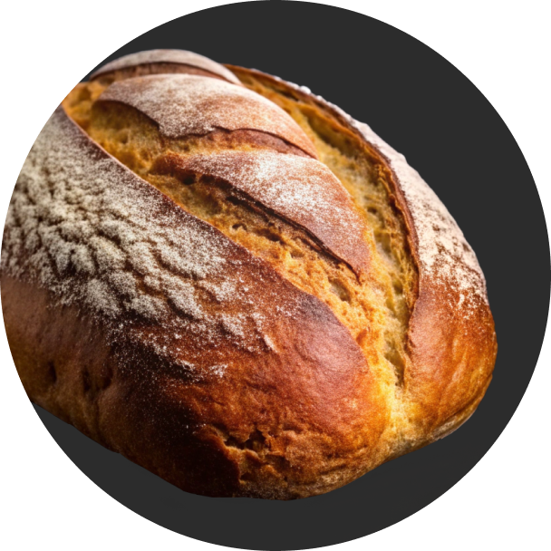

<section class="fresh-bread-menu">
  <div class="background-bread">
    <h2 class="bread-title">Bread</h2>
    <span class="bread-subtitle"
      >Fresh Bread Menu<span class="bread_dot">.</span></span
    >
    <p>
      Here’s our permanent bread menu, available all year round, regardless of
      the current season.
    </p>
    <article class="bread-item">
      
      <h4 class="bread-item-title">Sourdough Loaf</h4>
      <span class="bread-item-price">$4.70</span>
      <p>
        Sourdough loaf with a slightly sour and squishy consistency made with
        Biga sourdough.
      </p>
    </article>
    <article class="bread-item">
      
      <h4 class="bread-item-title">Whole Wheat Loaf</h4>
      <span class="bread-item-price">$5.20</span>
      <p>
        A wholesome bread with a dense crumb, rich wheat flavor, and a subtle
        tang.
      </p>
    </article>
    <article class="bread-item">
      
      <h4 class="bread-item-title">Rustic Rye Boule</h4>
      <span class="bread-item-price">$4.80</span>
      <p>
        A round loaf with a dark crust and rye taste. Ideal for sandwiches or
        serving with soups.
      </p>
    </article>
    <button class="menu-button" type="button">Download Full Menu</button>
  </div>
</section>
